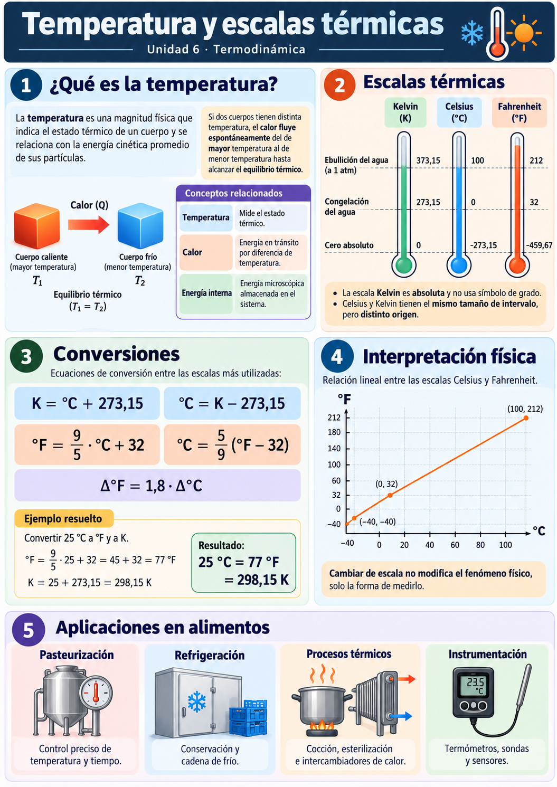
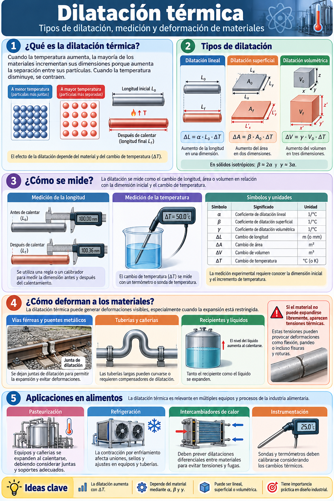
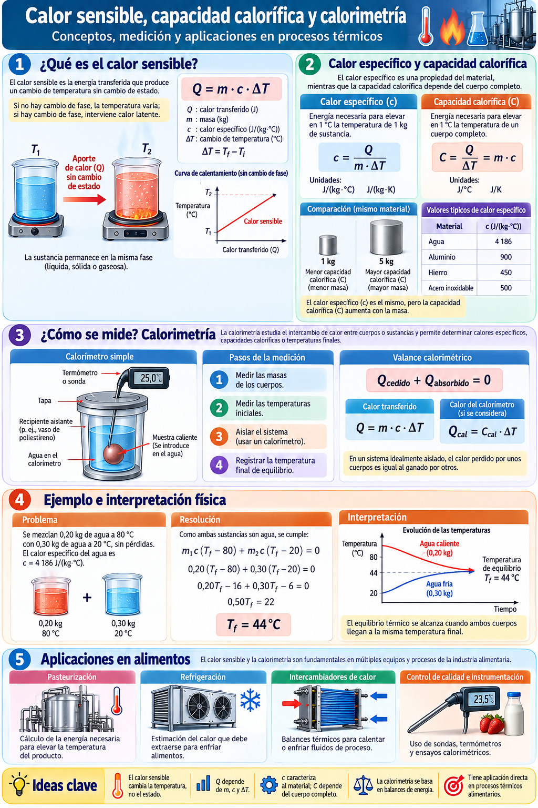
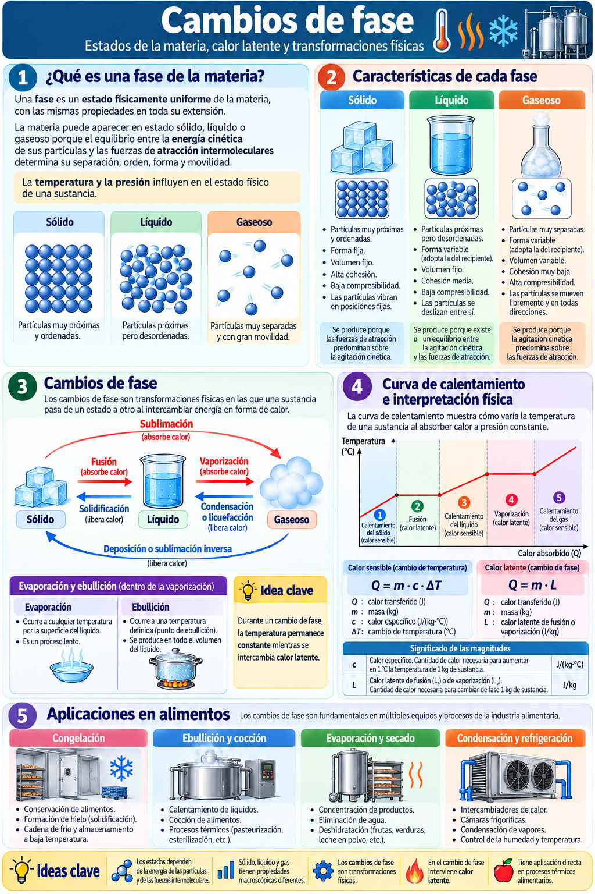
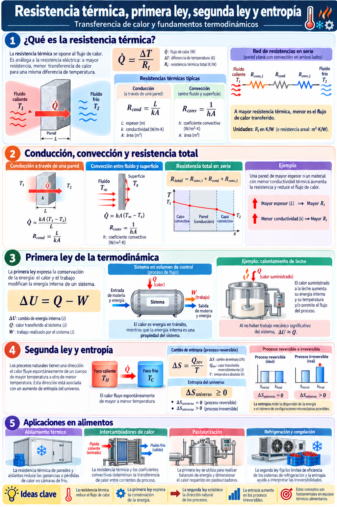

Temperatura, termometría, dilatación, calorimetría y cambios de fase
🌡️
Temperatura, termometría, dilatación, calorimetría y cambios de fase
Física Aplicada a la Tecnología de Alimentos · Unidad 6
Física Aplicada a la Tecnología de AlimentosUTN · FRLP
UNIDAD 6 · CLASE 12 / 121
Resultados de aprendizaje
1. Presentación y objetivos
Distinguir temperatura, calor, energía interna y trabajo, identificando sus unidades. Aplicar escalas térmicas, dilatación, calorimetría y cambios de fase. Modelar conducción, convección y radiación e interpretar resistencias térmicas. Formular balances con la primera ley y reconocer el sentido de los procesos mediante la segunda ley. Analizar cuantitativamente calentamientos, pasteurización, refrigeración e intercambiadores de calor. Identificar hipótesis simplificativas, límites de los modelos y variables relevantes para un…
Física Aplicada a la Tecnología de AlimentosUTN · FRLP
UNIDAD 6 · CLASE 13 / 121
2. Temperatura, equilibrio térmico y calor
Introducción y modelo físico
2. Temperatura, equilibrio térmico y calor: principios y modelos para el análisis de procesos térmicos.
Física Aplicada a la Tecnología de AlimentosUTN · FRLP
UNIDAD 6 · CLASE 14 / 121
Infografía 1. Temperatura y escalas térmicas.
Lectura e interpretación física

Doble clic sobre la imagen para ampliarla.
Física Aplicada a la Tecnología de AlimentosUTN · FRLP
UNIDAD 6 · CLASE 15 / 121
2.1 Temperatura y descripción microscópica
2. Temperatura, equilibrio térmico y calor
La temperatura es una propiedad de estado que caracteriza el equilibrio térmico de un sistema y determina la dirección espontánea del intercambio térmico cuando dos cuerpos se ponen en contacto. En un gas ideal, la energía cinética media de traslación de las moléculas se relaciona con la temperatura absoluta; sin embargo, en sólidos y líquidos existen otras contribuciones a la energía interna.
La ley cero de la termodinámica establece que si A y B están por separado en equilibrio térmico con C, entonces A y B están en equilibrio térmico entre sí. Esta propiedad permite fundamentar el uso de termómetros.
Física Aplicada a la Tecnología de AlimentosUTN · FRLP
UNIDAD 6 · CLASE 16 / 121
2.2 Escalas de temperatura
2. Temperatura, equilibrio térmico y calor
Una escala termométrica asigna números a estados de equilibrio térmico mediante una propiedad que varía reproduciblemente con la temperatura: expansión de un líquido, resistencia eléctrica, tensión termoeléctrica o emisión infrarroja. La lectura requiere calibración y no debe confundirse con la temperatura intrínseca si existe retardo de respuesta.
Celsius (°C): escala cuyo cero corresponde aproximadamente a la fusión del hielo a presión atmosférica normal y cuyo valor 100 corresponde aproximadamente a la ebullición del agua bajo esa presión. Hoy se define a partir de la temperatura termodinámica; sus puntos históricos son referencias didácticas, no una definición metrológica exacta. Fahrenheit (°F): escala histórica aún utilizada en algunos países; el agua congela aproximadamente a 32 °F y hierve a 212 °F. Kelvin (K): unidad básica del SI de temperatura termodinámica, con…
Una diferencia de 1 K es igual a una diferencia de 1 °C. En cambio, no debe confundirse una temperatura de 20 °C con 20 K: son estados térmicos muy diferentes.
Física Aplicada a la Tecnología de AlimentosUTN · FRLP
UNIDAD 6 · CLASE 17 / 121
2.3 ¿Qué es el calor?
2. Temperatura, equilibrio térmico y calor
El calor (\(Q\)) es energía transferida por una diferencia de temperatura entre el sistema y su entorno. No es una sustancia ni una propiedad almacenada. La energía interna (\(U\)) sí es una propiedad de estado y comprende contribuciones microscópicas de movimiento e interacción.
Física Aplicada a la Tecnología de AlimentosUTN · FRLP
UNIDAD 6 · CLASE 18 / 121
2.4 ¿De dónde provienen las fórmulas de conversión?
2. Temperatura, equilibrio térmico y calor
Las escalas Fahrenheit y Celsius son afines : una misma variación física se representa por intervalos distintos y por un origen numérico diferente. Si escribimos \(F=aC+b\) , los puntos de referencia del agua dan \(32=a(0)+b\) y \(212=a(100)+b\) . Por lo tanto, \(b=32\) y \(a=(212-32)/100=1{,}8=9/5\) .
Para diferencias de temperatura desaparece el término constante: \(\Delta F=\tfrac95\Delta C\) y \(\Delta K=\Delta C\) . Por ejemplo, un aumento de 10 °C equivale a un aumento de 18 °F, no a 50 °F.
Comprobación: \(20\times 9/5+32=68\) . El resultado es razonable para una temperatura ambiente templada.
Física Aplicada a la Tecnología de AlimentosUTN · FRLP
UNIDAD 6 · CLASE 19 / 121
Ejemplo resuelto · Temperatura, equilibrio térmico y calor
Planteo, hipótesis, cálculo y comprobación
Ejemplo resuelto A · Temperatura de un control de proceso Sistema: Sonda de un tanque con lectura de 158 °F. Hipótesis y modelo: Se trata de una conversión de temperatura absoluta entre escalas convencionales; no de un incremento de temperatura. Interacciones y fundamento: La recta de conversión contiene una pendiente y una ordenada al origen. Es indispensable restar 32 antes de aplicar el factor 5/9. Desarrollo matemático: \[t_{^\circ C}=\frac59(158-32)=70\ ^\circ\mathrm C;\qquad T=70+273{,}15=343{,}15\ \mathrm K\] Resultado:…
Física Aplicada a la Tecnología de AlimentosUTN · FRLP
UNIDAD 6 · CLASE 110 / 121
Simulación · Conversión entre escalas
Celsius, Kelvin y Fahrenheit
25 °C
298,15 K
77 °F
Física Aplicada a la Tecnología de AlimentosUTN · FRLP
UNIDAD 6 · CLASE 111 / 121
3. Medición de temperatura en procesos alimentarios
Introducción y modelo físico
Una medición útil exige distinguir la temperatura del producto, la pared del recipiente, el medio calefactor y el punto exacto donde se instala el sensor. Durante un proceso transitorio, esas temperaturas pueden ser diferentes.
El retardo de un sensor simple puede aproximarse con un modelo de primer orden, si la temperatura del medio cambia bruscamente:
\[T_s(t)=T_f+(T_{s,0}-T_f)e^{-t/\tau_s}\]
Física Aplicada a la Tecnología de AlimentosUTN · FRLP
UNIDAD 6 · CLASE 112 / 121
3.1 ¿Qué mide realmente un termómetro?
3. Medición de temperatura en procesos alimentarios
Todo instrumento establece una interacción térmica con el medio. Un termopar convierte una diferencia térmica en una señal eléctrica; una termorresistencia aprovecha la variación de la resistencia con la temperatura; un sensor infrarrojo estima una temperatura superficial a partir de radiación y necesita conocer la emisividad. La temperatura de proceso no se conoce instantáneamente: hay tiempos de respuesta, errores de instalación y diferencias entre temperatura del producto, pared y ambiente.
Una lectura estable es condición útil, pero no prueba uniformidad térmica en todo el alimento. En tuberías y tanques, la ubicación de la sonda y la mezcla determinan qué región está siendo medida.
Física Aplicada a la Tecnología de AlimentosUTN · FRLP
UNIDAD 6 · CLASE 113 / 121
Ejemplo resuelto · Medición de temperatura en procesos alimentarios
Planteo, hipótesis, cálculo y comprobación
Ejemplo resuelto A · Respuesta de una sonda Sistema: Termómetro de primer orden que se introduce en agua a 75 °C desde 20 °C. Hipótesis y modelo: Constante de tiempo τ = 12 s; agua suficientemente grande para mantener 75 °C; sin retardo adicional. Interacciones y fundamento: La sonda no mide instantáneamente el medio: su lectura se aproxima exponencialmente a la temperatura final. Desarrollo matemático: \[T_s(t)=T_\infty+(T_0-T_\infty)e^{-t/\tau};\quad T_s(24)=75-55e^{-2}\approx67{,}6\ ^\circ\mathrm C\] Resultado: A los 24 s la…
Física Aplicada a la Tecnología de AlimentosUTN · FRLP
UNIDAD 6 · CLASE 114 / 121
4. Dilatación térmica
Introducción y modelo físico
En muchos materiales, las dimensiones aumentan al elevarse la temperatura. Para intervalos moderados y materiales aproximadamente homogéneos e isótropos, la dilatación puede describirse mediante coeficientes constantes.
Física Aplicada a la Tecnología de AlimentosUTN · FRLP
UNIDAD 6 · CLASE 115 / 121
Infografía 2. Dilatación térmica: tipos, medición y deformación de materiales.
Lectura e interpretación física

Doble clic sobre la imagen para ampliarla.
Física Aplicada a la Tecnología de AlimentosUTN · FRLP
UNIDAD 6 · CLASE 116 / 121
4.1 Dilatación lineal
4. Dilatación térmica
\(\alpha\) es el coeficiente de dilatación lineal, con unidades \(\mathrm K^{-1}\). Para superficies y volúmenes de sólidos isótropos, como aproximación para cambios pequeños:
Para líquidos se emplea el coeficiente de dilatación volumétrica \(\beta\):
Física Aplicada a la Tecnología de AlimentosUTN · FRLP
UNIDAD 6 · CLASE 117 / 121
4.2 Ejemplo resuelto: tubería de acero
4. Dilatación térmica
Una tubería de acero inoxidable de 12 m pasa de 20 °C a 85 °C. Adoptar \(\alpha=17\times10^{-6}\,\mathrm K^{-1}\). ¿Cuánto se alarga si puede expandirse libremente?
El crecimiento es apreciable para conexiones rígidas. Si la tubería está impedida de dilatarse, surgen tensiones térmicas, que requieren análisis mecánico adicional.
Física Aplicada a la Tecnología de AlimentosUTN · FRLP
UNIDAD 6 · CLASE 118 / 121
Simulación 1 · Dilatación de una tubería
4. Dilatación térmica
Modelo lineal: no incluye restricciones mecánicas, variación del coeficiente ni gradientes de temperatura.
Física Aplicada a la Tecnología de AlimentosUTN · FRLP
UNIDAD 6 · CLASE 119 / 121
4.3 Fundamentación física y límites del modelo
4. Dilatación térmica
En los sólidos las partículas oscilan alrededor de posiciones de equilibrio. Como la interacción interatómica no es perfectamente simétrica frente a compresiones y separaciones, un incremento de la energía térmica suele aumentar la separación media. Ese efecto colectivo se manifiesta como expansión macroscópica. No es correcto explicarlo simplemente como que «los átomos se agrandan».
Una expansión impedida puede generar tensiones mecánicas: el cálculo de longitud libre no basta para verificar una instalación rígida con soportes, juntas y restricciones. En alimentos líquidos debe además considerarse que el coeficiente puede variar con temperatura y composición.
Física Aplicada a la Tecnología de AlimentosUTN · FRLP
UNIDAD 6 · CLASE 120 / 121
Ejemplo resuelto · Dilatación térmica
Planteo, hipótesis, cálculo y comprobación
Ejemplo resuelto A · Dilatación restringida de tubería Sistema: Tubería recta de acero de 8,0 m calentada 60 °C. Hipótesis y modelo: α = 16×10⁻⁶ K⁻¹, temperatura uniforme, dilatación libre para el primer cálculo. Interacciones y fundamento: El alargamiento resulta de la variación de longitud relativa; si se impide, aparecen tensiones que la fórmula geométrica no calcula. Desarrollo matemático: \[\Delta L=\alpha L_0\Delta T=16\times10^{-6}(8)(60)=0{,}00768\ \mathrm m\] Resultado: Alargamiento libre: 7,68 mm. Interpretación y…
Física Aplicada a la Tecnología de AlimentosUTN · FRLP
UNIDAD 6 · CLASE 121 / 121
5. Calor sensible, capacidad calorífica y calorimetría
Introducción y modelo físico
Cuando un cuerpo cambia de temperatura sin transformar su fase, el intercambio energético se denomina habitualmente calor sensible . Para un material con calor específico aproximadamente constante:
Donde \(m\) es la masa, \(c\) el calor específico [J/(kg·K)], y \(C\) la capacidad calorífica total [J/K]. Si \(c\) depende considerablemente de la temperatura debe integrarse:
\[Q=mc\Delta T\qquad C=mc\]
\[Q=m\int_{T_i}^{T_f}c(T)\,dT\]
Física Aplicada a la Tecnología de AlimentosUTN · FRLP
UNIDAD 6 · CLASE 122 / 121
Infografía 3. Calor sensible, capacidad calorífica y calorimetría.
Lectura e interpretación física

Doble clic sobre la imagen para ampliarla.
Física Aplicada a la Tecnología de AlimentosUTN · FRLP
UNIDAD 6 · CLASE 123 / 121
5.1 Balance de mezcla en un sistema aislado
5. Calor sensible, capacidad calorífica y calorimetría
Si se mezclan dos porciones sin pérdidas y sin cambios de fase:
La ecuación expresa que la suma algebraica de los intercambios de energía es cero para el sistema compuesto. Si también se calienta el recipiente, se incorpora \(C_r(T_f-T_{r,0})\).
\[m_1c_1(T_f-T_1)+m_2c_2(T_f-T_2)=0\]
\(C_r(T_f-T_{r,0})\)
Física Aplicada a la Tecnología de AlimentosUTN · FRLP
UNIDAD 6 · CLASE 124 / 121
5.2 Ejemplo resuelto: calentamiento de producto
5. Calor sensible, capacidad calorífica y calorimetría
Calcular la energía ideal necesaria para elevar 250 kg de leche desde 8 °C hasta 72 °C usando \(c=3{,}9\,\mathrm{kJ/(kg\,K)}\).
Este valor representa la energía absorbida por el producto, no necesariamente la energía que debe suministrar la instalación, que puede presentar pérdidas o recuperación de energía.
Física Aplicada a la Tecnología de AlimentosUTN · FRLP
UNIDAD 6 · CLASE 125 / 121
5.3 Interpretación microscópica de la capacidad calorífica
5. Calor sensible, capacidad calorífica y calorimetría
Al recibir energía, un material puede aumentar los movimientos traslacionales, rotacionales y vibracionales de sus constituyentes, además de cambiar interacciones intermoleculares. Por ello, diferentes sustancias no requieren la misma energía para experimentar un incremento térmico idéntico. El calor específico expresa esa diferencia por unidad de masa ; la capacidad calorífica corresponde al cuerpo completo.
La relación \(Q=mc\Delta T\) supone \(c\) aproximadamente constante y un proceso sin cambio de fase. En termodinámica se distinguen, según el proceso, \(c_p\) y \(c_v\) ; en líquidos y sólidos las diferencias son a menudo menores que en gases, pero no siempre pueden ignorarse.
Física Aplicada a la Tecnología de AlimentosUTN · FRLP
UNIDAD 6 · CLASE 126 / 121
Ejemplo resuelto · Calor sensible, capacidad calorífica y calorimetría
Planteo, hipótesis, cálculo y comprobación
Ejemplo resuelto A · Mezcla calorimétrica Sistema: Se mezclan 0,60 kg de agua a 70 °C y 0,40 kg a 20 °C. Hipótesis y modelo: Recipiente idealmente aislado, sin evaporación; c igual y constante. Interacciones y fundamento: El cuerpo caliente cede energía y el frío la absorbe. Para el sistema de ambos, la suma de intercambios es cero. Desarrollo matemático: \[0{,}60c(T_f-70)+0{,}40c(T_f-20)=0\quad\Rightarrow\quad T_f=50\ ^\circ\mathrm C\] Resultado: Temperatura final de equilibrio: 50 °C. Interpretación y control: La temperatura…
Física Aplicada a la Tecnología de AlimentosUTN · FRLP
UNIDAD 6 · CLASE 127 / 121
6. Cambios de fase y calor latente
Introducción y modelo físico
Durante la fusión, solidificación, vaporización o condensación, el sistema puede intercambiar energía sin variar apreciablemente su temperatura, siempre que la transformación ocurra a presión fija y en equilibrio.
\(L\) representa el calor latente específico de la transición. Para el agua a presión atmosférica, como valores de referencia: \(L_f\approx334\,\mathrm{kJ/kg}\) y \(L_v\approx2257\,\mathrm{kJ/kg}\) cerca de 100 °C. Ambos dependen de condiciones de operación.
\[Q=mL\]
\(L_f\approx334\,\mathrm{kJ/kg}\)
\(L_v\approx2257\,\mathrm{kJ/kg}\)
Física Aplicada a la Tecnología de AlimentosUTN · FRLP
UNIDAD 6 · CLASE 128 / 121
Infografía 4. Cambios de fase: estados de la materia, calor latente y transformaciones físicas.
Lectura e interpretación física

Doble clic sobre la imagen para ampliarla.
Física Aplicada a la Tecnología de AlimentosUTN · FRLP
UNIDAD 6 · CLASE 129 / 121
6.1 ¿Qué son los estados de agregación y qué entendemos por fase?
6. Cambios de fase y calor latente
La materia está constituida por partículas —átomos, moléculas o iones— que poseen energía y ejercen interacciones entre sí. A escala macroscópica, esas interacciones originan distintos estados de agregación : sólido, líquido y gaseoso. Cada uno presenta una combinación característica de forma, volumen, movilidad y respuesta a la compresión.
En termodinámica se utiliza también el concepto de fase : una región de un sistema que es físicamente homogénea y posee propiedades intensivas uniformes en equilibrio. Estado de agregación y fase no son estrictamente sinónimos : un sistema puede tener dos fases líquidas que no se mezclan, como aceite y agua; también puede presentar distintas fases sólidas. Para introducir el tema estudiaremos las fases sólida, líquida y gaseosa de una sustancia pura.
Física Aplicada a la Tecnología de AlimentosUTN · FRLP
UNIDAD 6 · CLASE 130 / 121
6.2 Estado sólido: estructura, movilidad y comportamiento mecánico
6. Cambios de fase y calor latente
Un sólido conserva, en condiciones ordinarias y sin cargas capaces de deformarlo, una forma y un volumen definidos. Sus partículas ocupan posiciones medias relativamente estables; en los sólidos cristalinos existe un orden espacial de largo alcance, mientras que en los amorfos (por ejemplo, el vidrio) no existe ese orden cristalino. En ambos casos las partículas pueden vibrar y el material almacena energía interna.
Fundamentación microscópica. Las interacciones entre partículas son suficientemente intensas para impedir que se desplacen libremente unas respecto de otras. La energía térmica excita sus vibraciones, pero en condiciones normales no elimina la estructura que caracteriza al sólido. Por eso puede resistir esfuerzos de corte, a diferencia de un fluido en reposo.
Interpretación termodinámica. Para una sustancia pura, a temperatura y presión fijadas, el estado sólido estable es aquel que presenta el menor potencial de Gibbs específico frente a las otras fases disponibles. Al aumentar la temperatura, aumenta la contribución entrópica a la estabilidad, lo que puede favorecer la fusión. La presión también puede modificar la temperatura de equilibrio entre fases.
Física Aplicada a la Tecnología de AlimentosUTN · FRLP
UNIDAD 6 · CLASE 131 / 121
6.3 Estado líquido: cohesión y capacidad de fluir
6. Cambios de fase y calor latente
Un líquido posee un volumen aproximadamente definido, pero no una forma propia: se adapta al recipiente y presenta una superficie libre cuando está en contacto con un gas y sometido a la gravedad. Su densidad es relativamente elevada y su compresibilidad suele ser pequeña comparada con la de los gases.
Fundamentación microscópica. Las moléculas permanecen próximas y siguen experimentando fuerzas atractivas y repulsivas, pero pueden cambiar de vecinos y desplazarse unas respecto de otras. Esto explica la fluidez y también que existan viscosidad, tensión superficial y difusión. Un líquido no es un conjunto de partículas aisladas como un gas ideal.
Interpretación termodinámica. El líquido puede ser la fase estable en cierto intervalo de temperatura y presión. El pasaje a vapor requiere vencer parcialmente las interacciones entre moléculas y producir una gran variación de volumen. Cuando líquido y vapor coexisten en equilibrio, ambas fases tienen la misma temperatura y presión y el mismo potencial químico de la sustancia.
Física Aplicada a la Tecnología de AlimentosUTN · FRLP
UNIDAD 6 · CLASE 132 / 121
6.4 Estado gaseoso: expansión, presión y compresibilidad
6. Cambios de fase y calor latente
Un gas no conserva forma ni volumen propios: se expande hasta ocupar el volumen disponible en el recipiente. Es mucho más compresible que un líquido o sólido, y su densidad depende marcadamente de la presión y de la temperatura.
Fundamentación microscópica. En un gas diluido, las partículas están separadas por distancias relativamente grandes y se desplazan continuamente. La presión sobre las paredes se origina en los intercambios de cantidad de movimiento durante sus choques con ellas. Para un gas ideal monoatómico , la energía cinética media de traslación depende de la temperatura absoluta:
Esta expresión no describe por sí sola toda la energía interna de gases moleculares, líquidos o sólidos; en ellos pueden intervenir rotaciones, vibraciones e interacciones.
Física Aplicada a la Tecnología de AlimentosUTN · FRLP
UNIDAD 6 · CLASE 133 / 121
6.4 Estado gaseoso: expansión, presión y compresibilidad · ampliación
Hipótesis, alcance y aplicación
Interpretación termodinámica. El modelo de gas ideal permite relacionar las variables de estado:
Donde \(p\) es presión absoluta, \(V\) volumen, \(n\) cantidad de sustancia, \(R\) constante universal de los gases y \(T\) temperatura en kelvin. La ecuación es una aproximación útil para gases suficientemente diluidos; el vapor próximo a condensar puede requerir modelos de gas real y datos de saturación.
Física Aplicada a la Tecnología de AlimentosUTN · FRLP
UNIDAD 6 · CLASE 134 / 121
6.5 Comparación macroscópica y explicación física
6. Cambios de fase y calor latente
Una precaución: decir que en el sólido «dominan las atracciones» y en el gas «domina la agitación» sirve como primera aproximación didáctica. La descripción rigurosa de qué fase es estable requiere considerar conjuntamente la energía, la entropía y las condiciones de presión y temperatura.
Física Aplicada a la Tecnología de AlimentosUTN · FRLP
UNIDAD 6 · CLASE 135 / 121
6.6 ¿Por qué se producen los cambios de fase? Enfoque termodinámico
6. Cambios de fase y calor latente
Al suministrar energía a una sustancia, esta puede aumentar su temperatura o cambiar de fase. En el calor sensible , predomina el cambio de temperatura dentro de una misma fase. Durante una transición de fase de una sustancia pura en equilibrio a presión constante, parte de la energía intercambiada modifica su organización e interacciones microscópicas y la proporción de cada fase, mientras la temperatura de transición permanece constante.
Desde la termodinámica, para una sustancia pura en equilibrio a presión y temperatura impuestas, la fase estable es la de menor energía libre de Gibbs molar (equivalente al potencial químico). En la coexistencia de dos fases se cumple:
La energía libre de Gibbs se expresa como \(G=H-TS\), donde \(H\) es la entalpía y \(S\) la entropía. El término \(TS\) explica por qué aumentar la temperatura puede favorecer fases con mayor libertad de movimiento molecular. El valor de la presión modifica también la estabilidad de las fases; por eso el agua no hierve siempre a 100 °C.
\[g_\alpha(T,p)=g_\beta(T,p)\]
Física Aplicada a la Tecnología de AlimentosUTN · FRLP
UNIDAD 6 · CLASE 136 / 121
6.6 ¿Por qué se producen los cambios de fase? Enfoque termodinámico · ampliación
Hipótesis, alcance y aplicación
Fusión: sólido → líquido, absorbe energía; solidificación: líquido → sólido, la libera. Vaporización: líquido → gas, absorbe energía. La evaporación sucede en la superficie y puede ocurrir sin ebullición; la ebullición ocurre cuando se forman burbujas de vapor estables dentro del líquido. Condensación: gas → líquido, libera energía. Sublimación: sólido → gas, absorbe energía; deposición: gas → sólido, libera energía.
Alimentos reales: los productos alimentarios son mezclas. La presencia de sales, azúcares, grasas, proteínas y agua ligada hace que congelación, fusión y ebullición no siempre ocurran a una sola temperatura; frecuentemente se distribuyen en intervalos y pueden coexistir varias fases.
Física Aplicada a la Tecnología de AlimentosUTN · FRLP
UNIDAD 6 · CLASE 137 / 121
6.7 Calentamiento con distintas etapas
6. Cambios de fase y calor latente
Para hielo inicialmente bajo 0 °C que se convierte en agua líquida a temperatura positiva:
La suma se construye etapa por etapa ; no es correcto usar una única diferencia térmica atravesando la transformación de fase.
Física Aplicada a la Tecnología de AlimentosUTN · FRLP
UNIDAD 6 · CLASE 138 / 121
6.9 Cómo interpretar una curva de calentamiento
6. Cambios de fase y calor latente
La pendiente de cada tramo de una gráfica \(T\) en función de \(Q\) vale aproximadamente \(dT/dQ=1/(mc)\) . Una pendiente pequeña indica mayor capacidad térmica total. La longitud horizontal de una meseta representa calor latente; no significa ausencia de transferencia de energía .
En mezclas alimentarias reales, como helados, salsas o productos con solutos, el cambio de fase puede ocurrir en un intervalo de temperaturas. La curva ideal de agua pura es una referencia para razonar, no una predicción completa de congelación de alimentos.
\(dT/dQ=1/(mc)\)
Física Aplicada a la Tecnología de AlimentosUTN · FRLP
UNIDAD 6 · CLASE 139 / 121
Ejemplo resuelto · Cambios de fase y calor latente
Planteo, hipótesis, cálculo y comprobación
Ejemplo 6-8 ampliado · Del hielo a −15 °C al vapor sobrecalentado a 120 °C Este recorrido enlaza las tres fases del agua y sus transiciones. Se parte de hielo a −15 °C y se llega a vapor sobrecalentado a 120 °C , a presión aproximadamente constante de 1 atm . Es una situación idealizada de calentamiento cuasiestático; a 1 atm el agua pura funde cerca de 0 °C y hierve cerca de 100 °C. Los valores térmicos utilizados son orientativos y no contemplan pérdidas ni energía del recipiente. Sistema: 1,00 kg de H₂O. Interacción: energía…
Para 1 kg de agua a ≈1 atm: Q ≈ 3,08 MJ. El suministro de calor no eleva la temperatura durante la fusión y la vaporización en equilibrio.
Física Aplicada a la Tecnología de AlimentosUTN · FRLP
UNIDAD 6 · CLASE 141 / 121
Evaluación formativa · ¿Qué significa suministrar calor?
Pausa de consolidación conceptual
1. ¿Cuándo se modifica la temperatura y cuándo cambia la fase?
2. ¿Cómo diferenciar calor específico de capacidad calorífica?
3. ¿Por qué una mezcla puede tener dos fases líquidas?
Física Aplicada a la Tecnología de AlimentosUTN · FRLP
UNIDAD 6 · CLASE 142 / 121
Cierre de clase 1
Síntesis, conexiones y preparación de la clase siguiente
✓ ¿Cuándo se modifica la temperatura y cuándo cambia la fase?
✓ ¿Cómo diferenciar calor específico de capacidad calorífica?
✓ ¿Por qué una mezcla puede tener dos fases líquidas?
Física Aplicada a la Tecnología de AlimentosUTN · FRLP
UNIDAD 6 · CLASE 243 / 121
Clase 2 · Transferencia de calor
Conducción, convección, radiación y resistencias térmicas
♨️
Conducción, convección, radiación y resistencias térmicas
Física Aplicada a la Tecnología de Alimentos · Unidad 6
Física Aplicada a la Tecnología de AlimentosUTN · FRLP
UNIDAD 6 · CLASE 244 / 121
7. Transferencia de calor: mecanismos fundamentales
Introducción y modelo físico
La termodinámica determina el balance energético entre estados; la transferencia de calor estudia la rapidez del intercambio. Se define la potencia térmica como:
En un horno, por ejemplo, el producto recibe energía por convección del aire, por radiación de paredes calientes y por conducción hacia su interior. Aislar conceptualmente cada mecanismo ayuda a entender qué resistencia controla el proceso.
Física Aplicada a la Tecnología de AlimentosUTN · FRLP
UNIDAD 6 · CLASE 245 / 121
Ejemplo resuelto · Transferencia de calor: mecanismos fundamentales
Planteo, hipótesis, cálculo y comprobación
Ejemplo resuelto A · Identificar mecanismos en una cámara fría Sistema: Panel entre aire exterior a 30 °C e interior a 2 °C. Hipótesis y modelo: Régimen estacionario cualitativo; se analizan aire, pared y superficies. Interacciones y fundamento: El aire exterior cede calor por convección al panel, el calor atraviesa el sólido por conducción y pasa por convección al aire interior; también puede haber radiación en superficies. Desarrollo matemático. La ecuación correspondiente se presenta a continuación.
Física Aplicada a la Tecnología de AlimentosUTN · FRLP
UNIDAD 6 · CLASE 246 / 121
8. Conducción: ley de Fourier
Introducción y modelo físico
La conducción es el transporte de energía dentro de un material o entre regiones contiguas, sin transporte macroscópico necesario de materia. En dirección \(x\), para un material homogéneo:
El signo negativo expresa que el calor fluye hacia temperaturas menores. Para una pared plana de espesor \(L\), área \(A\), propiedades constantes y régimen estacionario unidimensional :
Física Aplicada a la Tecnología de AlimentosUTN · FRLP
UNIDAD 6 · CLASE 247 / 121
8.1 Ejemplo resuelto: aislación de una cámara
8. Conducción: ley de Fourier
Una pared aislante tiene \(A=12\,\mathrm{m^2}\), \(L=0{,}08\,\mathrm m\), \(k=0{,}028\,\mathrm{W/(m\,K)}\), y una diferencia entre temperaturas superficiales de 25 K. Se desprecian los puentes térmicos.
En 10 horas se transfieren \(105\times10\times3600\approx3{,}78\,\mathrm{MJ}\), equivalentes a 1,05 kWh de energía térmica.
\(A=12\,\mathrm{m^2}\)
\(L=0{,}08\,\mathrm m\)
\(k=0{,}028\,\mathrm{W/(m\,K)}\)
Física Aplicada a la Tecnología de AlimentosUTN · FRLP
UNIDAD 6 · CLASE 248 / 121
8.2 Significado físico de la ley de Fourier
8. Conducción: ley de Fourier
La forma local de la ley de Fourier es \(q_x''=-k\,dT/dx\) , donde el flujo térmico superficial \(q_x''\) se mide en W/m². El signo negativo expresa que la transferencia espontánea tiene dirección opuesta al gradiente de temperatura. Con \(k\) constante, sección uniforme y estado estacionario, la integración permite obtener la conocida fórmula de pared plana.
Física Aplicada a la Tecnología de AlimentosUTN · FRLP
UNIDAD 6 · CLASE 249 / 121
Ejemplo resuelto · Conducción: ley de Fourier
Planteo, hipótesis, cálculo y comprobación
Ejemplo resuelto A · Panel aislante Sistema: Pared de una cámara frigorífica con A=10 m², L=0,10 m y k=0,040 W/(m·K). Hipótesis y modelo: Pared plana, una dimensión, régimen estacionario y caras a 25 °C y 5 °C. Interacciones y fundamento: Fourier relaciona tasa de calor con gradiente de temperatura; mayor espesor significa mayor resistencia. Desarrollo matemático: \[\dot Q=\frac{kA(T_1-T_2)}L=\frac{0{,}040(10)(25-5)}{0{,}10}=80\ \mathrm W\] Resultado: La transferencia de calor es 80 W hacia el interior. Interpretación y control:…
Física Aplicada a la Tecnología de AlimentosUTN · FRLP
UNIDAD 6 · CLASE 251 / 121
9. Convección: intercambio con fluidos
Introducción y modelo físico
La convección combina transferencia térmica en la zona próxima a una superficie y movimiento global del fluido. Se distingue convección natural (movimiento debido a diferencias de densidad) y forzada (movimiento impulsado por bombas, ventiladores o agitación).
El coeficiente convectivo \(h\) [W/(m²·K)] depende de la geometría, velocidad, estado de flujo, propiedades del fluido y temperatura. No es una constante universal del material.
Física Aplicada a la Tecnología de AlimentosUTN · FRLP
UNIDAD 6 · CLASE 252 / 121
9.1 Ejemplo de enfriamiento de una superficie
9. Convección: intercambio con fluidos
Una superficie de 2 m² se encuentra a 65 °C en contacto con aire a 25 °C. Si \(h=20\,\mathrm{W/(m^2\,K)}\), la potencia cedida es:
Este resultado es instantáneo si las temperaturas evolucionan; si permanecen constantes, representa un régimen estacionario.
\(h=20\,\mathrm{W/(m^2\,K)}\)
\[\dot Q=20(2)(65-25)=1600\,\mathrm W\]
Física Aplicada a la Tecnología de AlimentosUTN · FRLP
UNIDAD 6 · CLASE 253 / 121
9.2 Modelo transitorio de capacidad concentrada
9. Convección: intercambio con fluidos
Si la temperatura dentro del alimento puede considerarse uniforme y la capacidad térmica es constante, un cuerpo de masa \(m\) que intercambia calor con un fluido a temperatura fija cumple:
Este modelo es adecuado cuando la resistencia térmica interna es pequeña respecto de la externa; de forma orientativa se verifica el número de Biot \(Bi=hL_c/k\), y usualmente se requiere \(Bi\lesssim0{,}1\). Para alimentos gruesos y baja conductividad, esta hipótesis puede no cumplirse: la temperatura del centro será distinta de la superficie.
Física Aplicada a la Tecnología de AlimentosUTN · FRLP
UNIDAD 6 · CLASE 254 / 121
9.3 ¿De dónde surge el coeficiente de convección?
9. Convección: intercambio con fluidos
El intercambio entre una superficie sólida y un fluido se produce por conducción en la delgada región contigua a la pared y por movimiento del fluido en el resto. El coeficiente \(h\) resume el efecto de geometría, velocidad, régimen de circulación y propiedades del fluido: no es una constante universal del material .
En convección natural, el movimiento aparece por diferencias de densidad asociadas a la temperatura; en convección forzada, una bomba, agitador o ventilador lo impone. Agitar un producto puede aumentar la transferencia convectiva, aunque también intervienen su viscosidad, geometría y régimen de flujo.
Física Aplicada a la Tecnología de AlimentosUTN · FRLP
UNIDAD 6 · CLASE 255 / 121
Ejemplo resuelto · Convección: intercambio con fluidos
Planteo, hipótesis, cálculo y comprobación
Ejemplo resuelto A · Enfriamiento superficial Sistema: Producto con superficie de 2 m² a 35 °C en aire a 5 °C. Hipótesis y modelo: Coeficiente convectivo h=18 W/(m²·K) y temperaturas instantáneas dadas. Interacciones y fundamento: La ley de enfriamiento de Newton representa el efecto conjunto de transferencia en la película fluida cercana a la superficie. Desarrollo matemático: \[\dot Q=hA(T_s-T_\infty)=18(2)(35-5)=1080\ \mathrm W\] Resultado: Se extraen aproximadamente 1,08 kW en ese instante. Interpretación y control: La…
Física Aplicada a la Tecnología de AlimentosUTN · FRLP
UNIDAD 6 · CLASE 256 / 121
10. Radiación térmica
Introducción y modelo físico
Todo cuerpo con temperatura superior al cero absoluto emite radiación electromagnética. La transferencia radiante no necesita un medio material. Para una superficie gris pequeña que intercambia con un entorno grande a temperatura uniforme, se usa el modelo:
Donde \(\varepsilon\) es la emisividad (entre 0 y 1), \(\sigma=5{,}670374419\times10^{-8}\,\mathrm{W/(m^2\,K^4)}\) y las temperaturas deben expresarse en kelvin .
Física Aplicada a la Tecnología de AlimentosUTN · FRLP
UNIDAD 6 · CLASE 257 / 121
10.1 Ejemplo: bandeja caliente
10. Radiación térmica
Una bandeja de área expuesta \(A=0{,}8\,\mathrm{m^2}\), emisividad 0,8 y temperatura superficial de 120 °C está frente a un entorno grande a 25 °C. La potencia neta radiante aproximada es:
El modelo no incluye convección ni factores de visión complejos; en un horno real ambos mecanismos suelen actuar simultáneamente.
Física Aplicada a la Tecnología de AlimentosUTN · FRLP
UNIDAD 6 · CLASE 258 / 121
10.2 Origen físico de la dependencia con la cuarta potencia
10. Radiación térmica
Todo cuerpo con temperatura superior a 0 K emite radiación electromagnética por la agitación térmica de sus cargas. Para un cuerpo negro ideal, la potencia emitida por unidad de área está descrita por la ley de Stefan–Boltzmann, \(E_b=\sigma T^4\) . En una superficie real se incorpora la emisividad \(\varepsilon\) , y el intercambio neto depende también de las superficies visibles y de la radiación que recibe.
La expresión simplificada \(\varepsilon\sigma A(T_s^4-T_{ent}^4)\) es apropiada para una superficie pequeña frente a un recinto aproximadamente isotermo, con las idealizaciones correspondientes. Las temperaturas deben expresarse en kelvin : elevar °C a la cuarta potencia produce resultados físicamente incorrectos.
\(E_b=\sigma T^4\)
\(\varepsilon\)
\(\varepsilon\sigma A(T_s^4-T_{ent}^4)\)
Física Aplicada a la Tecnología de AlimentosUTN · FRLP
UNIDAD 6 · CLASE 259 / 121
Ejemplo resuelto · Radiación térmica
Planteo, hipótesis, cálculo y comprobación
Ejemplo resuelto A · Intercambio radiativo Sistema: Superficie de 1,5 m² a 60 °C frente a entorno grande a 20 °C. Hipótesis y modelo: Emisividad ε=0,8; entorno idealizado isotermo, factor de vista efectivo ≈1. Interacciones y fundamento: Stefan–Boltzmann depende de la cuarta potencia de la temperatura absoluta; primero convertir a kelvin. Desarrollo matemático: \[\dot Q=\varepsilon\sigma A(T_s^4-T_{amb}^4)\approx0{,}8(5{,}67\times10^{-8})(1{,}5)(333{,}15^4-293{,}15^4)\approx335\ \mathrm W\] Resultado: Intercambio neto radiativo…
Física Aplicada a la Tecnología de AlimentosUTN · FRLP
UNIDAD 6 · CLASE 260 / 121
11. Resistencias térmicas y coeficiente global
Introducción y modelo físico
En un equipo real, el calor puede atravesar sucesivamente el fluido caliente, la pared y el fluido frío. Para una pared plana con igual área de referencia:
La relación \(U=1/(AR_{\mathrm{total}})\) define el coeficiente global de transferencia de calor según el área de referencia elegida. En intercambiadores tubulares, las áreas internas y externas difieren y deben distinguirse.
Física Aplicada a la Tecnología de AlimentosUTN · FRLP
UNIDAD 6 · CLASE 261 / 121
11.1 Resistencias por ensuciamiento
11. Resistencias térmicas y coeficiente global
Los depósitos de proteínas, sales, grasas u otros compuestos sobre las superficies originan fouling (ensuciamiento), incorporando resistencia térmica adicional. Por ello, el rendimiento puede disminuir con las horas de operación, incluso si las temperaturas y los caudales de servicio permanecen sin cambios.
Física Aplicada a la Tecnología de AlimentosUTN · FRLP
UNIDAD 6 · CLASE 262 / 121
11.2 Analogía eléctrica y distribución de temperaturas
11. Resistencias térmicas y coeficiente global
En una red térmica en serie, la diferencia total de temperatura juega el papel de una diferencia de potencial; la potencia térmica representa una corriente y cada resistencia indica la oposición a la transferencia. Para una pared compuesta de capas planas puede escribirse \(R_{cond,i}=L_i/(k_i A)\) , y para cada película convectiva, \(R_{conv}=1/(hA)\) .
Una vez calculada la tasa, la caída térmica de cada resistencia es \(\Delta T_j=\dot Q R_j\) . Así se localiza dónde ocurre la mayor diferencia de temperatura y se identifica qué capa conviene modificar. Las resistencias en paralelo requieren sumar las potencias a través de trayectorias independientes, no sumar directamente sus resistencias.
Física Aplicada a la Tecnología de AlimentosUTN · FRLP
UNIDAD 6 · CLASE 263 / 121
Ejemplo resuelto · Resistencias térmicas y coeficiente global
Planteo, hipótesis, cálculo y comprobación
Ejemplo resuelto A · Pared más convección Sistema: Pared de 5 m², L=0,08 m, k=0,04 W/(m·K), h interior=10 y exterior=20 W/(m²·K). Hipótesis y modelo: Dos fluidos a 30 y 5 °C; resistencias térmicas en serie, sin puentes térmicos. Interacciones y fundamento: La misma potencia atraviesa todas las resistencias en régimen estacionario. Desarrollo matemático: \[R_t=\frac1{20(5)}+\frac{0{,}08}{0{,}04(5)}+\frac1{10(5)}=0{,}43\ \mathrm{K/W};\quad\dot Q=\frac{25}{0{,}43}\approx58{,}1\ \mathrm W\] Resultado: Potencia transferida: 58,1 W.…
Física Aplicada a la Tecnología de AlimentosUTN · FRLP
UNIDAD 6 · CLASE 264 / 121
Evaluación formativa · Diseño de aislación
Pausa de consolidación conceptual
1. ¿Cómo afecta duplicar el espesor al flujo en una pared ideal?
2. ¿Por qué el coeficiente convectivo cambia con el régimen del fluido?
3. ¿Qué resistencias intervienen en una pared de cámara frigorífica?
Física Aplicada a la Tecnología de AlimentosUTN · FRLP
UNIDAD 6 · CLASE 265 / 121
Cierre de clase 2
Síntesis, conexiones y preparación de la clase siguiente
✓ ¿Cómo afecta duplicar el espesor al flujo en una pared ideal?
✓ ¿Por qué el coeficiente convectivo cambia con el régimen del fluido?
✓ ¿Qué resistencias intervienen en una pared de cámara frigorífica?
Física Aplicada a la Tecnología de AlimentosUTN · FRLP
UNIDAD 6 · CLASE 366 / 121
Clase 3 · Leyes y ciclos
Primera ley, segunda ley, entropía, ciclos y refrigeración
⚙️
Primera ley, segunda ley, entropía, ciclos y refrigeración
Física Aplicada a la Tecnología de Alimentos · Unidad 6
Física Aplicada a la Tecnología de AlimentosUTN · FRLP
UNIDAD 6 · CLASE 367 / 121
12. Primera ley de la termodinámica
Introducción y modelo físico
La primera ley expresa la conservación de la energía. Para un sistema cerrado , con la convención de calor positivo cuando ingresa al sistema y trabajo positivo cuando el sistema lo realiza:
Si los cambios de energía cinética y potencial macroscópica son despreciables:
\[\Delta U+\Delta E_c+\Delta E_p=Q-W\]
\[\Delta U=Q-W\]
Física Aplicada a la Tecnología de AlimentosUTN · FRLP
UNIDAD 6 · CLASE 368 / 121
12.1 Trabajo de expansión
12. Primera ley de la termodinámica
Para un proceso cuasiestático con presión externa equilibrada con el sistema:
Si la presión se mantiene constante, \(W=p(V_f-V_i)\). El área bajo la curva de un diagrama \(p-V\) representa el trabajo de expansión.
\[W=\int_{V_i}^{V_f}p\,dV\]
\(W=p(V_f-V_i)\)
Física Aplicada a la Tecnología de AlimentosUTN · FRLP
UNIDAD 6 · CLASE 369 / 121
12.3 Sistemas abiertos: volúmenes de control
12. Primera ley de la termodinámica
En pasteurizadores y equipos continuos entra y sale materia. La ecuación general de energía para un volumen de control en régimen estacionario es:
La letra \(h\) aquí representa entalpía específica [J/kg]; no debe confundirse con \(h\), coeficiente convectivo [W/(m²·K)], que aparece en otro contexto.
Si el líquido es aproximadamente incompresible, se desprecian cambios cinéticos, potenciales y trabajo de eje, y el calor específico permanece aproximadamente constante:
Física Aplicada a la Tecnología de AlimentosUTN · FRLP
UNIDAD 6 · CLASE 371 / 121
12.5 ¿Qué significa conservar la energía?
12. Primera ley de la termodinámica
La primera ley no asegura que el sistema permanezca a la misma temperatura: asegura que la variación de energía total sea igual a la energía neta transferida por calor, trabajo y transporte de materia. Es indispensable declarar un sistema y sus fronteras antes de asignar signos.
No intercambia masa. Puede intercambiar calor y trabajo.
La masa cruza las fronteras y transporta entalpía y energía mecánica.
\(\Delta U=Q-W\)
Física Aplicada a la Tecnología de AlimentosUTN · FRLP
UNIDAD 6 · CLASE 372 / 121
12.5 ¿Qué significa conservar la energía? · ampliación
Hipótesis, alcance y aplicación
Modelo ideal sin intercambio de masa ni de energía con el entorno.
Con la convención de trabajo positivo realizado por el sistema , \(\Delta U=Q-W\) para un sistema cerrado sin otros cambios macroscópicos. Un calentador eléctrico dentro del sistema recibe energía como trabajo eléctrico; una resistencia atravesada por corriente no constituye automáticamente «calor de entrada» a través de la frontera.
Física Aplicada a la Tecnología de AlimentosUTN · FRLP
UNIDAD 6 · CLASE 373 / 121
Ejemplo resuelto · Primera ley de la termodinámica
Planteo, hipótesis, cálculo y comprobación
Ejemplo resuelto A · Balance energético de un tanque Sistema: Tanque cerrado recibe 450 kJ de calor; un agitador realiza 80 kJ de trabajo sobre el producto. Hipótesis y modelo: Sin variaciones apreciables de energía cinética y potencial. Convención: trabajo realizado por el sistema positivo. Interacciones y fundamento: La primera ley establece que el cambio de energía interna depende del calor y el trabajo transferidos. Desarrollo matemático: \[\Delta U=Q-W_{\mathrm{por\ sistema}}=450-(-80)=530\ \mathrm{kJ}\] Resultado: La…
Física Aplicada a la Tecnología de AlimentosUTN · FRLP
UNIDAD 6 · CLASE 374 / 121
13. Segunda ley de la termodinámica
Introducción y modelo físico
La conservación de energía no basta para establecer si un proceso es espontáneo. El calor se transfiere espontáneamente de regiones calientes hacia regiones frías, pero el proceso inverso exige una intervención externa.
El enunciado de Clausius establece que no es posible un proceso cuyo único efecto sea transferir calor de un cuerpo frío a uno caliente. El de Kelvin–Planck indica que ninguna máquina que opera en ciclo puede convertir íntegramente en trabajo el calor recibido de una sola fuente.
Física Aplicada a la Tecnología de AlimentosUTN · FRLP
UNIDAD 6 · CLASE 375 / 121
Infografía 5. Resistencia térmica, primera ley, segunda ley y entropía.
Lectura e interpretación física

Doble clic sobre la imagen para ampliarla.
Física Aplicada a la Tecnología de AlimentosUTN · FRLP
UNIDAD 6 · CLASE 376 / 121
13.1 Entropía y generación interna
13. Segunda ley de la termodinámica
La entropía \(S\) es una propiedad de estado relacionada con la direccionalidad de los procesos. Para un proceso reversible:
La desigualdad refleja que en procesos irreversibles se genera entropía. Entre sus causas se encuentran los intercambios con diferencias finitas de temperatura, fricción y mezcla espontánea.
\[dS=\frac{\delta Q_{\mathrm{rev}}}{T}\]
\[\Delta S\geq0\]
Física Aplicada a la Tecnología de AlimentosUTN · FRLP
UNIDAD 6 · CLASE 377 / 121
13.2 Rendimiento de una máquina térmica
13. Segunda ley de la termodinámica
El rendimiento de Carnot es el máximo teórico para una máquina reversible que trabaja entre dos focos a temperaturas absolutas \(T_H\) y \(T_C\). No es un rendimiento típico de plantas industriales.
Física Aplicada a la Tecnología de AlimentosUTN · FRLP
UNIDAD 6 · CLASE 378 / 121
13.3 Sentido de los procesos y degradación de la energía
13. Segunda ley de la termodinámica
La primera ley admite formalmente un proceso que transfiera energía de un cuerpo frío a uno caliente sin aporte externo, porque el balance energético podría cerrar. La segunda ley determina que ese proceso no ocurre espontáneamente . En los procesos reales existe irreversibilidad: transferencia de calor con diferencia finita de temperatura, fricción, estrangulamiento y mezclado aumentan la entropía total del universo.
El signo igual corresponde a un proceso reversible ideal; el mayor que cero a uno irreversible. Un intercambiador puede conservar perfectamente la energía y, sin embargo, producir entropía por intercambio entre corrientes a temperaturas distintas. Minimizar pérdidas de calidad energética tiene relevancia para eficiencia en instalaciones térmicas.
Física Aplicada a la Tecnología de AlimentosUTN · FRLP
UNIDAD 6 · CLASE 379 / 121
13.4 Transformaciones termodinámicas básicas y su representación en diagramas p–V
13. Segunda ley de la termodinámica
Los ciclos térmicos combinan transformaciones elementales. En un diagrama presión–volumen (p–V), cada transformación aparece como una curva o una recta característica. El área encerrada por un ciclo representa el trabajo neto intercambiado por el sistema.
En términos prácticos, si el volumen aumenta durante una expansión, el sistema puede entregar trabajo; si disminuye durante una compresión, se realiza trabajo sobre el sistema.
Qué permanece constante: la temperatura.
\[W=\int p\,dV\]
Física Aplicada a la Tecnología de AlimentosUTN · FRLP
UNIDAD 6 · CLASE 380 / 121
13.4 Transformaciones termodinámicas básicas y su representación en diagramas p–V · ampliación
Hipótesis, alcance y aplicación
En un gas ideal, \(pV=\text{cte}\). Si hay expansión isotérmica, el sistema absorbe calor y puede realizar trabajo sin cambiar su temperatura.
Qué permanece constante: la presión.
En equipos abiertos y en calentamientos con pistón móvil, una transformación puede aproximarse a presión constante. El trabajo vale \(W=p\,\Delta V\).
Física Aplicada a la Tecnología de AlimentosUTN · FRLP
UNIDAD 6 · CLASE 381 / 121
13.5 Ciclos térmicos: funcionamiento y balances de energía
13. Segunda ley de la termodinámica
En una máquina térmica que opera en ciclo, el fluido de trabajo regresa a su estado inicial después de una secuencia de transformaciones. Como la variación total de energía interna es nula durante un ciclo completo, el trabajo neto es igual a la diferencia entre el calor recibido y el rechazado. La primera ley determina este balance, mientras que la segunda ley establece la dirección de los procesos y sus límites de rendimiento.
En los motores térmicos el objetivo es convertir parte del calor absorbido en trabajo. En los refrigeradores y bombas de calor ocurre el proceso inverso: se aporta trabajo para extraer energía de una región fría y cederla a una más caliente.
Física Aplicada a la Tecnología de AlimentosUTN · FRLP
UNIDAD 6 · CLASE 382 / 121
13.6 Motores térmicos clásicos: Carnot, Otto y Diesel
13. Segunda ley de la termodinámica
Los ciclos de Carnot, Otto y Diesel son modelos termodinámicos idealizados. Cada uno combina transformaciones específicas y permite analizar cómo el calor recibido se transforma parcialmente en trabajo, con las limitaciones impuestas por la segunda ley.
Es un ciclo ideal y reversible formado por dos transformaciones isotérmicas y dos adiabáticas. No describe un motor real concreto, pero establece el límite superior teórico de eficiencia entre dos focos a temperaturas \(T_H\) y \(T_C\).
Sirve como referencia para comparar motores reales.
Física Aplicada a la Tecnología de AlimentosUTN · FRLP
UNIDAD 6 · CLASE 383 / 121
13.6 Motores térmicos clásicos: Carnot, Otto y Diesel · ampliación
Hipótesis, alcance y aplicación
Muestra que la eficiencia mejora si aumenta \(T_H\) o disminuye \(T_C\).
Ningún ciclo real puede superarlo entre los mismos focos.
Al modificar los parámetros, se recalculan los estados y las curvas p–V del ciclo ideal.
Interpretación: el límite de Carnot depende de las temperaturas absolutas de los dos focos. El simulador interactivo p–V se encuentra en la diapositiva dedicada al ciclo de Carnot; aquí se resume el significado de su rendimiento.
Física Aplicada a la Tecnología de AlimentosUTN · FRLP
UNIDAD 6 · CLASE 384 / 121
13.7 Ciclo de refrigeración: visión general
13. Segunda ley de la termodinámica
Un sistema de refrigeración realiza el proceso opuesto al motor térmico: consume trabajo para extraer calor de un foco frío y cederlo a uno caliente. Esto no contradice la segunda ley porque el transporte de energía desde la región fría hacia la caliente ocurre gracias al trabajo suministrado al compresor.
En el ciclo de compresión de vapor más usual intervienen cuatro elementos principales:
Evaporador: el refrigerante se evapora absorbiendo calor del recinto o producto frío. Compresor: recibe trabajo y eleva presión y temperatura del refrigerante. Condensador: el refrigerante cede calor al ambiente y se condensa. Válvula de expansión: reduce la presión del fluido antes de volver al evaporador.
Física Aplicada a la Tecnología de AlimentosUTN · FRLP
UNIDAD 6 · CLASE 385 / 121
Ejemplo resuelto · Segunda ley de la termodinámica
Planteo, hipótesis, cálculo y comprobación
Ejemplo resuelto A · Límite de Carnot Sistema: Máquina ideal entre 500 K y 300 K. Hipótesis y modelo: Ciclo reversible teórico; temperaturas expresadas en kelvin. En el cálculo se utiliza T_H = 500 K para el foco caliente y T_C = 300 K para el foco frío. Interacciones y fundamento: La segunda ley impide transformar todo el calor recibido en trabajo en un ciclo entre dos focos. Desarrollo matemático: \[\eta_{\mathrm{Carnot}}=1-\frac{T_C}{T_H}=1-\frac{300}{500}=0{,}40\] Resultado: Rendimiento máximo reversible: 40 %.…
Física Aplicada a la Tecnología de AlimentosUTN · FRLP
UNIDAD 6 · CLASE 386 / 121
Simulación · Rendimiento de Carnot
Variación de los focos térmicos y de las trayectorias p–V
50 %
TH/TC = 2,00
Física Aplicada a la Tecnología de AlimentosUTN · FRLP
UNIDAD 6 · CLASE 387 / 121
14. Refrigeración, bombas de calor y desempeño energético
Introducción y modelo físico
Un equipo frigorífico extrae energía del recinto o producto frío y la rechaza a un entorno más caliente. Para ello consume trabajo mecánico o eléctrico.
El coeficiente de desempeño de refrigeración (COP) se define como:
Física Aplicada a la Tecnología de AlimentosUTN · FRLP
UNIDAD 6 · CLASE 388 / 121
14.1 Componentes conceptuales de un circuito frigorífico
14. Refrigeración, bombas de calor y desempeño energético
En el evaporador el refrigerante absorbe energía a baja temperatura; el compresor eleva su presión y temperatura; el condensador entrega calor al medio caliente; y la válvula de expansión reduce la presión para reiniciar el ciclo.
Física Aplicada a la Tecnología de AlimentosUTN · FRLP
UNIDAD 6 · CLASE 389 / 121
14.2 Ejemplo resuelto
14. Refrigeración, bombas de calor y desempeño energético
Un equipo retira 18 kW de una cámara y consume 6 kW en el compresor, en las condiciones consideradas.
Este COP se refiere al equipo en el punto de operación; el consumo completo de una instalación puede incluir ventiladores, bombas, desescarches y auxiliares.
Física Aplicada a la Tecnología de AlimentosUTN · FRLP
UNIDAD 6 · CLASE 390 / 121
Simulación 3 · Límite ideal de refrigeración
14. Refrigeración, bombas de calor y desempeño energético
El COP de Carnot es un límite termodinámico, no una predicción del equipo real. La diferencia de temperatura del ciclo real suele ser mayor que la diferencia entre recinto y ambiente.
Física Aplicada a la Tecnología de AlimentosUTN · FRLP
UNIDAD 6 · CLASE 391 / 121
14.3 Interpretación física del ciclo de compresión de vapor
14. Refrigeración, bombas de calor y desempeño energético
El evaporador absorbe energía térmica del espacio frío; el compresor consume trabajo y eleva presión y temperatura del refrigerante; el condensador rechaza calor al ambiente; y el dispositivo de expansión reduce la presión y produce una mezcla fría para reiniciar el ciclo. Estos procesos requieren propiedades y diagramas del refrigerante para su dimensionamiento real.
El COP de Carnot establece un límite superior ideal entre dos temperaturas absolutas y no debe presentarse como valor de funcionamiento esperado de una planta real. El consumo de ventiladores, bombas, desescarches y pérdidas del sistema puede disminuir el desempeño global.
Física Aplicada a la Tecnología de AlimentosUTN · FRLP
UNIDAD 6 · CLASE 392 / 121
Ejemplo resuelto · Refrigeración, bombas de calor y desempeño energético
Planteo, hipótesis, cálculo y comprobación
Ejemplo resuelto A · Potencia de un equipo frigorífico Sistema: Una cámara requiere retirar 6 kW y su sistema opera con COP=3,0. Hipótesis y modelo: Régimen estacionario; COP se define como potencia frigorífica dividida por potencia eléctrica idealizada. Interacciones y fundamento: El refrigerador consume trabajo para transportar calor desde el foco frío al caliente. Desarrollo matemático: \[COP=\frac{\dot Q_f}{\dot W}\Rightarrow\dot W=\frac{6}{3}=2\ \mathrm{kW};\qquad \dot Q_c=6+2=8\ \mathrm{kW}\] Resultado: Consumo aproximado:…
Física Aplicada a la Tecnología de AlimentosUTN · FRLP
UNIDAD 6 · CLASE 393 / 121
Evaluación formativa · Motores y refrigeración
Pausa de consolidación conceptual
1. ¿Por qué la primera ley no determina el sentido espontáneo del calor?
2. ¿Qué expresan el rendimiento y el COP?
3. ¿Qué transformaciones componen Otto, Diesel y Carnot?
Física Aplicada a la Tecnología de AlimentosUTN · FRLP
UNIDAD 6 · CLASE 394 / 121
Cierre de clase 3
Síntesis, conexiones y preparación de la clase siguiente
✓ ¿Por qué la primera ley no determina el sentido espontáneo del calor?
✓ ¿Qué expresan el rendimiento y el COP?
✓ ¿Qué transformaciones componen Otto, Diesel y Carnot?
Física Aplicada a la Tecnología de AlimentosUTN · FRLP
UNIDAD 6 · CLASE 495 / 121
Clase 4 · Procesos alimentarios
Intercambiadores, pasteurización, enfriamiento y casos integradores
🏭
Intercambiadores, pasteurización, enfriamiento y casos integradores
Física Aplicada a la Tecnología de Alimentos · Unidad 6
Física Aplicada a la Tecnología de AlimentosUTN · FRLP
UNIDAD 6 · CLASE 496 / 121
15. Intercambiadores de calor
Introducción y modelo físico
Un intercambiador permite transferir energía entre dos corrientes a temperaturas distintas, generalmente separadas por una pared. Son comunes los equipos de placas, doble tubo, carcasa y tubos, y superficies raspadas.
Física Aplicada a la Tecnología de AlimentosUTN · FRLP
UNIDAD 6 · CLASE 497 / 121
15.1 Balances por corriente
15. Intercambiadores de calor
Para fluidos monofásicos, flujos estacionarios y calor específico aproximadamente constante:
Si no hay pérdidas al ambiente: \(\dot Q_h=\dot Q_c=\dot Q\). Las letras \(e\) y \(s\) representan entrada y salida.
\[\dot Q_h=\dot m_h c_{p,h}(T_{h,e}-T_{h,s})\]
\[\dot Q_c=\dot m_c c_{p,c}(T_{c,s}-T_{c,e})\]
\(\dot Q_h=\dot Q_c=\dot Q\)
Física Aplicada a la Tecnología de AlimentosUTN · FRLP
UNIDAD 6 · CLASE 498 / 121
15.3 Diferencia media logarítmica de temperatura (DMLT)
15. Intercambiadores de calor
Cuando la diferencia de temperaturas varía a lo largo del equipo, para condiciones apropiadas de flujo y propiedades constantes:
En contracorriente , \(\Delta T_1=T_{h,e}-T_{c,s}\) y \(\Delta T_2=T_{h,s}-T_{c,e}\). En paralelo , \(\Delta T_1=T_{h,e}-T_{c,e}\) y \(\Delta T_2=T_{h,s}-T_{c,s}\). Las dos diferencias deben ser positivas para el modelo sin inversión térmica local. Si son iguales, la DMLT es ese mismo valor.
En configuraciones multipaso se requiere un factor de corrección \(F\): \(\dot Q=UA F\Delta T_{lm}\). El método no sustituye el balance de energía de cada corriente.
Física Aplicada a la Tecnología de AlimentosUTN · FRLP
UNIDAD 6 · CLASE 499 / 121
15.4 Ejemplo resuelto: área de intercambiador
15. Intercambiadores de calor
En contracorriente, un fluido caliente entra a 90 °C y sale a 60 °C; el frío ingresa a 20 °C y sale a 50 °C. La potencia intercambiada es 50 kW y \(U=1000\,\mathrm{W/(m^2\,K)}\).
El área ideal calculada no contempla ensuciamiento progresivo ni márgenes de diseño.
Física Aplicada a la Tecnología de AlimentosUTN · FRLP
UNIDAD 6 · CLASE 4100 / 121
Simulación 4 · Balance de un intercambiador
15. Intercambiadores de calor
Se supone una corriente caliente de agua equivalente y una corriente fría con \(c_p=3{,}9\,\mathrm{kJ/(kg\,K)}\). No se resuelve el perfil local ni se comprueba el área disponible: el cálculo muestra límites energéticos y diferencias terminales.
\(c_p=3{,}9\,\mathrm{kJ/(kg\,K)}\)
Física Aplicada a la Tecnología de AlimentosUTN · FRLP
UNIDAD 6 · CLASE 4101 / 121
15.5 Interpretar el gradiente térmico y el ensuciamiento
15. Intercambiadores de calor
El intercambio ocurre porque las dos corrientes presentan una diferencia local de temperatura a lo largo del equipo. En contracorriente suele aprovecharse mejor ese potencial, aunque la selección depende de restricciones sanitarias, pérdida de carga, viscosidad y geometría. La DMLT es una media adecuada de ese salto cuando se cumplen las hipótesis del método.
Los depósitos sobre la superficie forman resistencias térmicas adicionales y pueden reducir \(U\) . Por ello, una misma temperatura de entrada y un mismo caudal no garantizan idéntico desempeño después de un período de operación. El diseño sanitario, la limpieza CIP y los límites de pérdida de carga deben estudiarse junto con el balance térmico.
Física Aplicada a la Tecnología de AlimentosUTN · FRLP
UNIDAD 6 · CLASE 4102 / 121
Ejemplo resuelto · Intercambiadores de calor
Planteo, hipótesis, cálculo y comprobación
Ejemplo resuelto A · Balance entre dos corrientes Sistema: Agua caliente 1 kg/s baja de 80 a 60 °C; agua fría 2 kg/s entra a 20 °C. Hipótesis y modelo: Mismo c=4,18 kJ/(kg·K); equipo adiabático al entorno, sin cambio de fase. Interacciones y fundamento: La energía cedida por el agua caliente debe ser absorbida por el agua fría. Desarrollo matemático: \[\dot Q=1(4{,}18)(80-60)=83{,}6\ \mathrm{kW};\quad T_{f,s}=20+\frac{83{,}6}{2(4{,}18)}=30\ ^\circ\mathrm C\] Resultado: Potencia intercambiada: 83,6 kW; salida fría: 30 °C.…
Física Aplicada a la Tecnología de AlimentosUTN · FRLP
UNIDAD 6 · CLASE 4103 / 121
16. Pasteurización: física del calentamiento
Introducción y modelo físico
La pasteurización es un tratamiento térmico diseñado para disminuir riesgos microbiológicos y/o la carga microbiana según el producto y sus condiciones. En términos físicos, involucra el calentamiento, la transferencia hacia el punto térmicamente más desfavorable y la permanencia en condiciones prescritas. Alcanzar una temperatura medida no demuestra, por sí solo, que se haya logrado la inocuidad.
Física Aplicada a la Tecnología de AlimentosUTN · FRLP
UNIDAD 6 · CLASE 4104 / 121
16.1 Carga térmica sensible
16. Pasteurización: física del calentamiento
\[\dot Q_{\mathrm{producto}}\simeq\dot m c_p(T_p-T_i)\]
Física Aplicada a la Tecnología de AlimentosUTN · FRLP
UNIDAD 6 · CLASE 4105 / 121
16.2 Tiempo de residencia en una sección de retención
16. Pasteurización: física del calentamiento
En una primera aproximación de flujo ideal, usando el caudal volumétrico \(\dot V\) y el volumen efectivo \(V_r\):
En equipos reales, la distribución de tiempos de residencia, la velocidad máxima local, la geometría y el régimen del flujo deben considerarse de acuerdo con criterios técnicos y regulatorios aplicables.
\[t_r=\frac{V_r}{\dot V}\]
Física Aplicada a la Tecnología de AlimentosUTN · FRLP
UNIDAD 6 · CLASE 4106 / 121
16.3 Recuperación de calor
16. Pasteurización: física del calentamiento
Si una corriente fría recupera una fracción \(r\) del salto térmico ideal desde la corriente tratada, en un modelo didáctico simplificado:
Esta definición de \(r\) es didáctica ; la efectividad rigurosa de un intercambiador se define mediante \(\dot Q/\dot Q_{\max}\), considerando las capacidades caloríficas de ambas corrientes.
\[T_{\mathrm{pre}}=T_i+r(T_p-T_i)\]
\[\dot Q_{\mathrm{externo}}=\dot m c_p(T_p-T_{\mathrm{pre}})\]
\(\dot Q/\dot Q_{\max}\)
Física Aplicada a la Tecnología de AlimentosUTN · FRLP
UNIDAD 6 · CLASE 4107 / 121
Simulación 5 · Potencia, regeneración y retención
16. Pasteurización: física del calentamiento
Advertencia: el control simula energía y volumen nominal. No valida tratamiento microbiológico, normativa sanitaria ni distribución de tiempos de residencia. La temperatura objetivo y el tiempo son únicamente parámetros didácticos elegidos por el usuario.
Física Aplicada a la Tecnología de AlimentosUTN · FRLP
UNIDAD 6 · CLASE 4108 / 121
16.4 Ejemplo integrador resuelto
16. Pasteurización: física del calentamiento
Una línea procesa 1800 kg/h con \(c_p=3{,}9\,\mathrm{kJ/(kg\,K)}\). El producto entra a 10 °C, se desea elevarlo a 72 °C y se precalienta por recuperación hasta 53,4 °C.
Punto 2 — Hipótesis: líquido monofásico, \(c_p\) constante, sin pérdidas, sin variaciones de energía cinética y potencial.
Punto 3 — Interacciones: entrada y salida de masa; ingreso de potencia térmica desde el servicio caliente.
Física Aplicada a la Tecnología de AlimentosUTN · FRLP
UNIDAD 6 · CLASE 4109 / 121
16.4 Ejemplo integrador resuelto · ampliación
Hipótesis, alcance y aplicación
Punto 4 — Modelo: volumen de control estacionario.
Punto 5 — Ley física: primera ley de la termodinámica.
La sección final demanda aproximadamente 36,3 kW frente a 120,9 kW sin precalentamiento, en el modelo ideal. Se ha desplazado parte de la carga hacia una transferencia interna regenerativa.
Física Aplicada a la Tecnología de AlimentosUTN · FRLP
UNIDAD 6 · CLASE 4110 / 121
16.5 Diferenciar física térmica y letalidad microbiológica
16. Pasteurización: física del calentamiento
El modelo \(\dot Q=\dot m c_p\Delta T\) permite calcular la carga energética , pero por sí solo no certifica que un producto ha alcanzado una condición sanitaria suficiente. La pasteurización efectiva depende del binomio temperatura–tiempo, del microorganismo objetivo, de la composición del alimento, de la distribución térmica, de la residencia hidráulica y de la verificación y validación del equipo.
La relación \(V=\dot V t\) proporciona un volumen nominal ideal de retención. En flujo real, la velocidad local no siempre es uniforme: el tiempo mínimo de residencia puede ser distinto del tiempo obtenido a partir del caudal medio. Por ello, la cifra obtenida es una estimación física preliminar y no una validación sanitaria.
\(\dot Q=\dot m c_p\Delta T\)
Física Aplicada a la Tecnología de AlimentosUTN · FRLP
UNIDAD 6 · CLASE 4111 / 121
Ejemplo resuelto · Pasteurización: física del calentamiento
Planteo, hipótesis, cálculo y comprobación
Ejemplo resuelto A · Carga térmica de pasteurización Sistema: Leche con flujo de 900 kg/h calentada desde 10 °C hasta 72 °C. Hipótesis y modelo: Calor específico c=3,9 kJ/(kg·K), sin regeneración ni pérdidas. Interacciones y fundamento: El balance de entalpía sensible expresa la energía requerida por el producto. Desarrollo matemático: \[\dot Q=\frac{900}{3600}(3{,}9)(72-10)=60{,}45\ \mathrm{kW}\] Resultado: Potencia ideal requerida: 60,45 kW. Interpretación y control: El valor calcula calentamiento, no valida por sí solo la…
Física Aplicada a la Tecnología de AlimentosUTN · FRLP
UNIDAD 6 · CLASE 4112 / 121
17. Enfriamiento y cadena de frío
Introducción y modelo físico
En el enfriamiento de alimentos aparecen al menos tres contribuciones energéticas: la energía sensible que se extrae del producto, las entradas de calor por paredes e infiltración, y las cargas auxiliares (ventiladores, iluminación, apertura de puertas, etc.). Durante la congelación se agrega la energía asociada al cambio de fase.
Si se retiran 300 kg de alimento con \(c_p=3{,}6\,\mathrm{kJ/(kg\,K)}\) desde 25 °C hasta 4 °C:
\[Q_{\mathrm{producto}}\approx mc_p(T_i-T_f)\quad\text{(sin cambio de fase)}\]
\(c_p=3{,}6\,\mathrm{kJ/(kg\,K)}\)
\[Q=300(3{,}6)(25-4)=22\,680\,\mathrm{kJ}\]
Física Aplicada a la Tecnología de AlimentosUTN · FRLP
UNIDAD 6 · CLASE 4113 / 121
17.1 ¿Por qué el centro del alimento se enfría más lento?
17. Enfriamiento y cadena de frío
En productos sólidos o empaquetados, la energía debe recorrer una distancia desde el centro hacia la superficie por conducción, antes de ser transferida al aire o al líquido de enfriamiento por convección. El tamaño, espesor y forma influyen fuertemente en el tiempo necesario. Esto explica por qué un cálculo de energía total no determina, por sí solo, el tiempo de proceso.
Física Aplicada a la Tecnología de AlimentosUTN · FRLP
UNIDAD 6 · CLASE 4114 / 121
17.2 Balance transitorio frente a la temperatura del centro
17. Enfriamiento y cadena de frío
En un alimento relativamente grueso, la temperatura superficial puede descender rápidamente mientras su centro conserva una temperatura mayor. El gradiente interno impulsa la conducción, y la convección exterior extrae la energía al medio refrigerante. En ese caso no alcanza con un único valor de temperatura para caracterizar todo el producto.
La constante de tiempo de la aproximación concentrada aumenta con la masa y el calor específico y disminuye al aumentar \(hA\) ; esta interpretación es útil para objetos pequeños o muy conductores. Para piezas grandes o poco conductoras, el proceso depende de difusividad térmica \(a=k/(\rho c_p)\) y tamaño característico, y requiere un modelo espacial.
\(a=k/(\rho c_p)\)
Física Aplicada a la Tecnología de AlimentosUTN · FRLP
UNIDAD 6 · CLASE 4115 / 121
Ejemplo resuelto · Enfriamiento y cadena de frío
Planteo, hipótesis, cálculo y comprobación
Ejemplo resuelto A · Enfriamiento exponencial Sistema: Producto idealizado a 70 °C colocado en ambiente a 5 °C. Hipótesis y modelo: Modelo de capacidad concentrada, constante de tiempo τ=20 min y temperatura inicial uniforme. Interacciones y fundamento: El calor intercambiado por convección hace disminuir la diferencia de temperatura de forma exponencial. Desarrollo matemático: \[T(t)=5+(70-5)e^{-t/20};\quad T(40)=5+65e^{-2}\approx13{,}8\ ^\circ\mathrm C\] Resultado: Después de 40 min: 13,8 °C. Interpretación y control: Para…
Física Aplicada a la Tecnología de AlimentosUTN · FRLP
UNIDAD 6 · CLASE 4116 / 121
18. Caso de estudio: tratamiento térmico con recuperación
Introducción y modelo físico
Se analiza conceptualmente una línea de bebida líquida que ingresa fría, se precalienta en un regenerador, se calienta en una sección final, atraviesa un tramo de retención y se enfría antes del envasado. La descripción es didáctica; el proceso sanitario concreto depende de las características de la bebida.
Física Aplicada a la Tecnología de AlimentosUTN · FRLP
UNIDAD 6 · CLASE 4117 / 121
Preguntas guía para el análisis técnico
18. Caso de estudio: tratamiento térmico con recuperación
¿Cuál es la potencia térmica absorbida por el producto entre cada par de temperaturas? ¿Cómo se modifica la potencia externa si aumenta la recuperación de energía? ¿Qué diferencias hay entre volumen nominal de retención y tiempo mínimo garantizado? Identificar los puntos de medición de temperatura y analizar los efectos de los retardos de los sensores. ¿Cómo influye el ensuciamiento del intercambiador en su coeficiente global? ¿Qué carga se impone al sistema frigorífico si el producto llega más caliente de lo previsto?
Física Aplicada a la Tecnología de AlimentosUTN · FRLP
UNIDAD 6 · CLASE 4118 / 121
Ejemplo resuelto · Caso de estudio: tratamiento térmico con recuperación
Planteo, hipótesis, cálculo y comprobación
Ejemplo resuelto A · Ahorro por regeneración Sistema: Leche con caudal de 1000 kg/h se precalienta de 8 a 52 °C recuperando energía del producto caliente. Hipótesis y modelo: c=3,9 kJ/(kg·K), sin pérdidas adicionales en la etapa de recuperación. Interacciones y fundamento: La energía recuperada disminuye la demanda de calentamiento externo. Desarrollo matemático: \[\dot Q_{rec}=\frac{1000}{3600}(3{,}9)(52-8)\approx47{,}7\ \mathrm{kW}\] Resultado: Recuperación térmica aproximada: 47,7 kW. Interpretación y control: El ahorro…